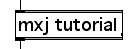

|  |
| Tutorial04 | Plus1 - Variables and inlet identification |
We'll continue our investigation of Java by creating an example class that has the functionality of the Max plus object (+). Recall that the plus object has two inlets: the right inlet is used to set the addend and the left inlet to input the primary value and trigger output of the addition.
import com.cycling74.max.*;
public class Plus1 extends MaxObject {
private int addend = 0;
public Plus1() {
declareInlets(new int[]{DataTypes.INT, DataTypes.INT});
declareOutlets(new int[]{DataTypes.INT});
}
public void inlet(int i) {
if (getInlet() == 0) {
outlet(0, i+addend);
} else {
addend = i;
}
}
}
After the import statement and the class declaration, the variable addend is declared as an integer. The private keyword means that the variable will not be accessible by code outside of this class. addend is an instance variable, which means that each copy of the Plus1 class that is created will have its own instance of addend. It's also possible to define a variable which is allocated only once and can be accessed by the entire class. We'll see an example of this type of class variable in a later tutorial, but in this case an instance variable is appropriate since the user probably wants to have different Plus1 objects with different addends in different parts of his patch. Note that addend is assigned a default value of 0.
In the constructor that follows this variable declaration we see for the first time an example of how to change the number of inlets and outlets. The declareInlets and declareOutlets methods each take an array of integers as an argument, the size of which determines the number of inlets or outlets, respectively. (In fact the number of outlets will be one greater than the number of items in the integer array that is passed to declareOutlets. This is to accommodate the standard output methods for attributes, a special type of variable that we'll discuss in a later tutorial.)
In the example above you'll notice that we're creating new arrays right inside the declareInlets and declareOutlets method calls. You'll also notice that the contents of the arrays have been initialized using DataTypes.INT. Each inlet and outlet can be associated with a certain type of data, which can help prevent confusion in a patching situation. For example, if a particular outlet is only going to send integers the developer may want to declare it using DataTypes.INT so that Max doesn't allow a connection to be made between it and an inlet that only accepts floats.
The DataTypes class defines five different types you can use to declare your inlets and outlets, each of which corresponds to one of the types of messages we examined in the HelloWorld2 tutorial: DataTypes.INT for integers, DataTypes.FLOAT for floats, DataTypes.LIST for lists, DataTypes.MESSAGE for messages, and DataTypes.ALL for an inlet or outlet that will accept or send any of the different data types. For most purposes, DataTypes.ALL is a fine choice, but since Plus1 is only designed to work with integers we've used DataTypes.INT. In addition to preventing patching errors, using integer inlets and outlets allows Max to minimize the overhead associated with sending and receiving integers - in other words, using a type such as DataTypes.INT is more efficient than using an untyped DataTypes.ALL, and so should be used if possible.
Other than the constructor, this class has only a single inlet method that handles integers that are input into either of the two inlets. To determine which inlet has been used the getInlet method, which returns the appropriate inlet index, is called. In the above method if the integer is input in the left inlet the addition is sent out the left outlet. If the right inlet was used the incoming value is stored in addend.
| Example: |